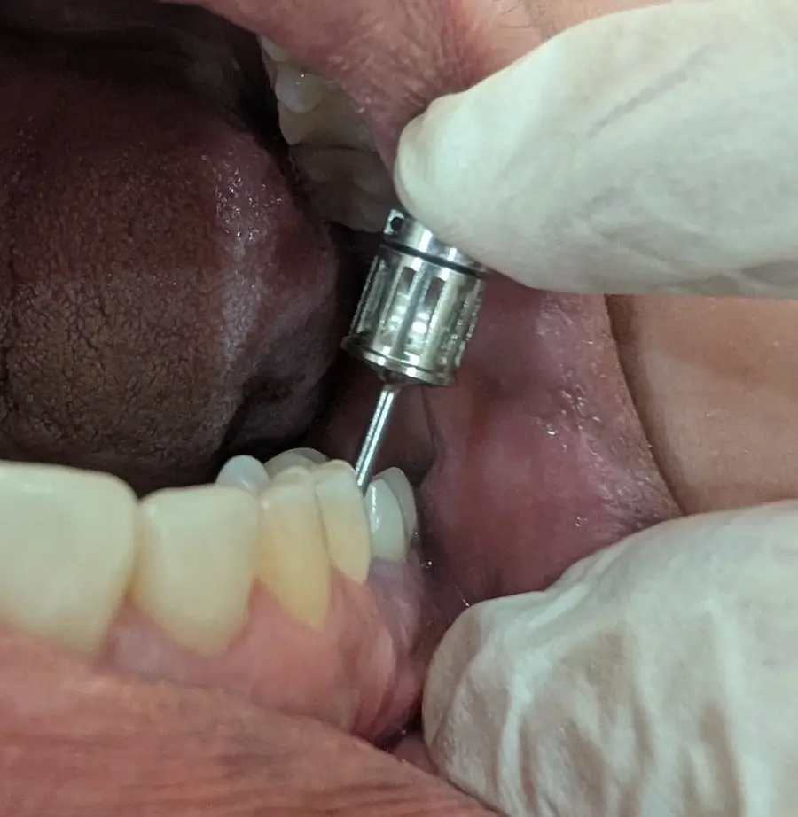

نسخه استخراجشده؛ ترجمه یا تأیید علمی انجام نشده است. وضعیت: captured
قرار است روی ایمپلنت خلفیای روکش بسازی که زاویهاش به سمت باکولینگوال نامناسب است. تصور رایج این است که قضیه ساده است: یک اباتمنت مناسب (مثلاً اباتمنت زاویهدار) میگذاری، مسیر را اصلاح میکنی و تمام؛ انگار زاویه فقط یک مسئلهی مسیر است. این تصور اشتباه است.

زاویهی فیکسچر خودش را در عوارض بعدی نشان میدهد، و دقیقاً به همین خاطر باید سر انتخاب روکش و طرح اکلوزال دقت کنی.
وقتی زاویه در این جهت باشد، عملاً درگیر شلشدن پیچ هستی؛ پس تصمیم اول روشن است: روکش باید برگشتپذیر (retrievable) باشد، تا اگر پیچ شل شد بشود بدون خراب کردن روکش سراغش رفت و دوباره بست.
نکتهی ظریف: همان زاویهی باکولینگوال که ریسک شلشدن را بالا میبرد، محل دسترسی پیچ را هم روی باکال میاندازد.
اکلوژن بیمار گروپفانکشن بود: موقع حرکات طرفی چند دندان خلفی سمت کارگر با هم گاید را برمیدارند، یعنی نیروی افقی به این روکش هم میرسد. حتی اگر مقالات این بردار را روی این دندان خاص قطعی تأیید نکنند، روی ایمپلنتی که از قبل بهخاطر زاویه بار غیرمحوری دارد، ترجیح این است که همین نیرو کم شود.
روی فیکسچر زاویهدار هم جلوی شلشدن پیچ را بگیر، هم جلوی اضافهبار افقی را، بیاینکه زیبایی را از دست بدهی.